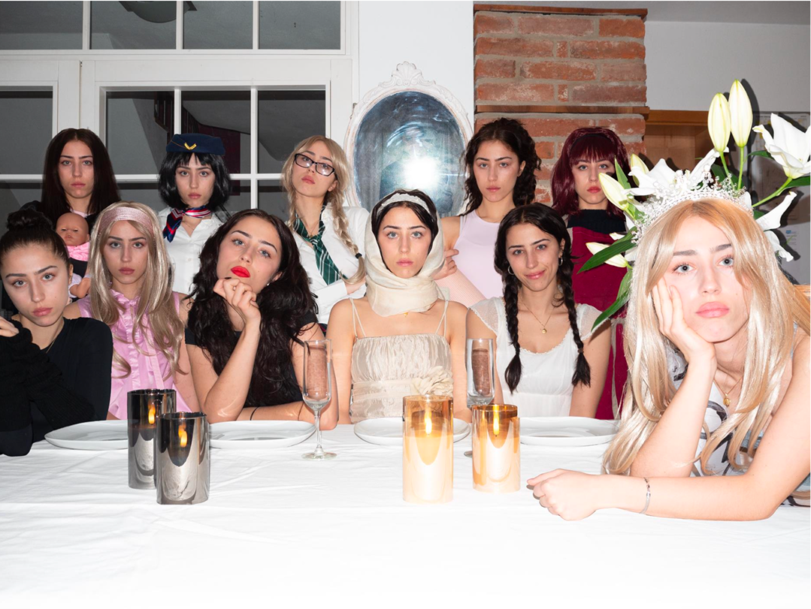
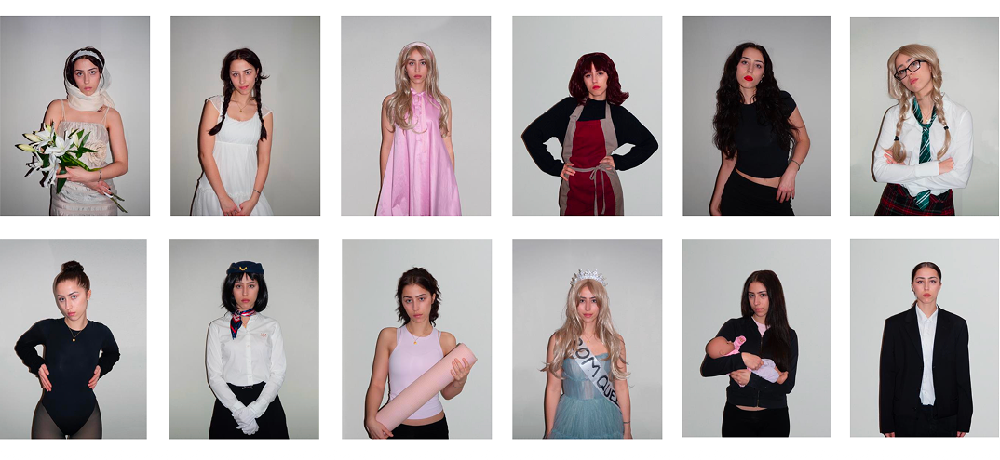

The task
We were tasked to emulate a photographer of our choosing.
My interpretation
I chose to emulate David LaChapelle's "last supper" because it is challenging the boundaries between being profane and sacred, as well as criticizing the commercialization of spirituality.
I also found myself drawn to the work of Tomoko Sawade since she condemns the standardization of official ID photos and speaks about the fluidity of identity in modern society. Furthermore, she explores identity constructions, gender performances, and how appearance can shape perception.
I wanted to showcase what women are often told to look like or do as "IDs" and how women are frequently being perceived and expected to act in more conservative settings as for example the catholic church. Hence, I wanted to incorporate the idea of a male gaze in my photography. In addition, there are only 11 disciples instead of 12 in my work as I wanted to leave room for all the women that feel like they have to be a certain way.